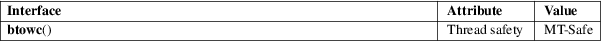

btowc − convert single byte to wide character
Standard C library (libc, −lc)
#include <wchar.h>
wint_t btowc(int c);
The btowc() function converts c, interpreted as a multibyte sequence of length 1, starting in the initial shift state, to a wide character and returns it. If c is EOF or not a valid multibyte sequence of length 1, the btowc() function returns WEOF.
The btowc() function returns the wide character converted from the single byte c. If c is EOF or not a valid multibyte sequence of length 1, it returns WEOF.
For an explanation of the terms used in this section, see attributes(7).

C11, POSIX.1-2008.
C99, POSIX.1-2001.
The behavior of btowc() depends on the LC_CTYPE category of the current locale.
This function should never be used. It does not work for encodings which have state, and unnecessarily treats single bytes differently from multibyte sequences. Use either mbtowc(3) or the thread-safe mbrtowc(3) instead.
mbrtowc(3), mbtowc(3), wctob(3)